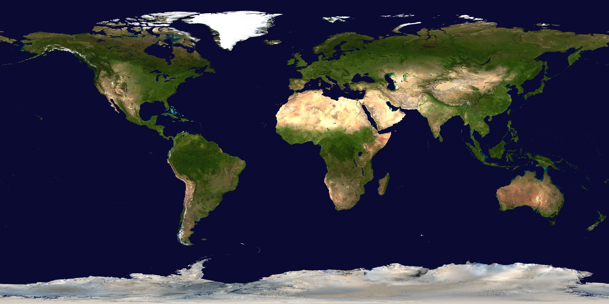
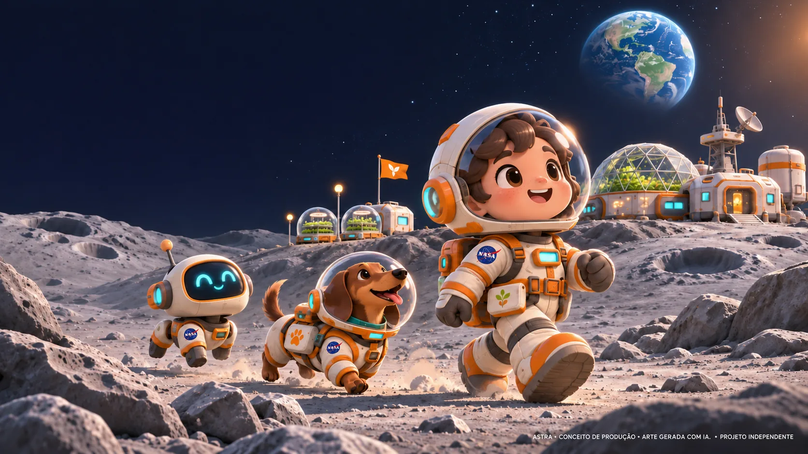
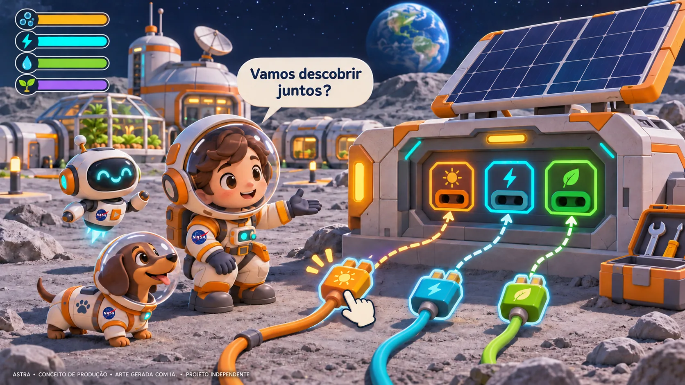
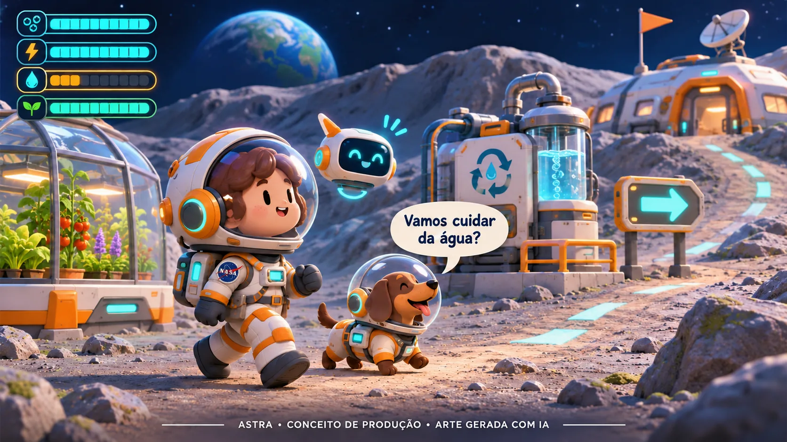

TRANSPARENCY / SOURCES & ARTWORK
Know what is science.
Know what is imagined.
The site distinguishes NASA information, fictional gameplay assumptions, AI-generated concepts and actual prototype captures.
NASA data and scientific references

NASA SATELLITE IMAGERY · NOT AI-GENERATEDBlue Marble / Terra–MODIS
A static satellite-observation mosaic used as the game’s Earth texture. Credit: NASA/Goddard Space Flight Center Scientific Visualization Studio; Reto Stockli; NASA Earth Observatory; Terra/MODIS. The source PNG was converted to JPEG at 2048 × 1024 pixels; no elevation is inferred.
NASA source and full credits ↗ · NASA media guidelines ↗
NASA Science lists lunar surface gravity as 1.624 m/s²; ASTRA uses 1.62 m/s² with accessible controls. ECLSS, radiation and Veggie references inform concepts. Resource rates, crop cycles and hazard timing are fictional teaching assumptions. Terrain is authored fiction: no measured LOLA elevation map is loaded. This site does not provide a live NASA data feed.
Download the structured NASA data and usage registry ↗
AI-generated artwork
Each concept illustration has a visible English AI-generated-art label. The same classification, creator, source and file hashes are documented in the media provenance ledger.

AI-GENERATED CONCEPT ARTLunar journey
Created with OpenAI image_gen; English text localization generated and visually reviewed on 15 November 2026. This is an illustration of the production vision, not a screenshot, measured lunar geography or a shipped feature.
View the English source artwork ↗ 
AI-GENERATED CONCEPT ARTPractical tasks and discovery
Created with OpenAI image_gen; English text localization generated and visually reviewed on 15 November 2026. This is an illustration of the production vision, not a screenshot, measured lunar geography or a shipped feature.
View the English source artwork ↗ 
AI-GENERATED CONCEPT ARTQuestions and mentoring
Created with OpenAI image_gen; English text localization generated and visually reviewed on 15 November 2026. This is an illustration of the production vision, not a screenshot, measured lunar geography or a shipped feature.
View the English source artwork ↗ 
AI-GENERATED CONCEPT ARTWater awareness and companion support
Created with OpenAI image_gen; English text localization generated and visually reviewed on 15 November 2026. This is an illustration of the production vision, not a screenshot, measured lunar geography or a shipped feature.
View the English source artwork ↗ AI-GENERATED VECTOR ARTWORKThe ASTRA identity
Original SVG paths authored with GPT-6.1 Terra and reviewed by the integrating Codex agent. The ascent mark, orbital sweep and lettering are original ASTRA artwork. No third-party logo or font file is embedded.
Dark-surface logo SVG · Light-surface logo SVG
The actual prototype
Archived gameplay captures show real staged runs of the prototype, not image-generated game graphics. The Babylon world, procedural models, SVG portraits and animation code were created with AI coding assistance and are documented in the game repository’s AI usage record. A captured scene is not evidence of full-route acceptance, hardware performance or learning outcomes.
Independent project
NASA does not endorse ASTRA. Third-party NASA graphics retained on fictional concept uniforms are excluded from the project’s own logo/code license. Their presence in generated concepts requires media-rule review before an official competition submission. Scientific provenance, artwork disclosure and repository publication do not establish eligibility, NASA approval or educational efficacy.
Institutional website repository ↗ · Game repository ↗